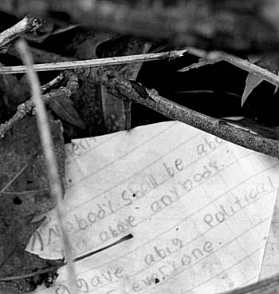

Saturday, May 15, 2004
Bag Lady
I was at the river with my plastic bag, picking trash. It was hot and green, almost lushly so. My hands were sweating in my new Walgreen's garden gloves, hideous little contraptions made of some improbable, unpleasantly nubbly plastic. They felt like little ovens.
The path was remarkably clean. That's not to say there were none of the usual artifacts from Dunkin Donuts and Poland Springs. But not too many. Cookie and chip packets, candy wrappers, newspapers, bottle caps, styrofoam peanuts -- I scooped them all up, gazing warily at the burgeoning stands of poison ivy. Surely picking trash earns merit points to keep rhus dermatitis at bay.
With my growing load of detritus, I went down one of the several small paths to a riverbank clearing. There I found a whole case full of empty budweiser bottles, and a field of scattered bud cans. Plus some empty snack food packets, and one pink plastic tampax applicator. Parked neatly in the weeds of the pathside was a shopping cart, freshly pinched from the adjacent mega-grocery store, Little Debbie World, which obviously had been used to transport the brewskies to the party lair.
"Swine," I thought, and tried to find compassion for the drunken litterbugs. It was tough. I imagined scrawling the word in the mud with a stick: S W I N E. "They probably can't even read," continued my brain, deeply enjoying -- in fact wallowing in -- one of its favorite kilesas, aversion.
With its load of empties, my bag was full and heavy. I'd have to turn back. Then there was the matter of the shopping cart. There were three options. I could leave it there, limiting my self-defined mission to picking small trash. Of course, chances are it would end up in the river sooner or later. I could phone up Little Debbie World and try to describe the location of the cart and hope they would send someone to fetch it. Or I could push it out myself. The choice was obvious. Plus, I could use it to transport the heavy bag to my car.
This, of course, gave my brain an even more amusing topic.
Omigod, what if someone sees me pushing the cart, they'll think I'm a bag lady picking up empties for nickels, I really do look like an undernourished derelict in these ratty sneakers and these baggy jeans, they'll think I stole the cart, maybe they'll arrest me, I really do need to buy some new clothes, gawd I hate shopping, oh no look a bicyclist, is that a pitying smile she's giving me, she really does think I'm a homeless derelict pushing my shopping cart through the woods, maybe she'll see the gardening gloves and realize what I've been doing, who am I kidding, what if the cart boy at Little Debbie World thinks I've pinched this cart, if he even dares to suggest that I'll tell him off, yeah, I'll tell him I'll bring the cart back where I found it, how would he like to fetch it from the poison ivy laden riverbank ? I'm no bag lady you little twerp I'm a DOCTOR ! See my Hallmark Health parking sticker ? Wanna see my license ?
And so on and so forth.
Trash.
Greed, hatred, delusion.
Just pick it up.
Just let them go.
Tuesday, May 11, 2004
I Do Like The Image, Though, Of The Mitthead With A Pink Mustache
On Monday, unless Federal Judge Tauro gives credence to the arguments of some deep south "Liberty Council" homophobes who have slithered into town to try to stop it injunctively, same sex marriage will become legal in Massachusetts.
Governor Mitthead has been swilling Pepto Bismal -- no, I take that back, has been popping the proton pump inhibitor of his and his physician's choice as I'm sure his health plan's one of those Carte Blanche ones -- to quiet the dyspeptic angst he must feel at the prospect of it. Heck, he's had to ratchet up the other two pieces of his platform: his "foolproof" plan for restoring capital punishment to Massachusetts, and (now that the merest glimmer of financial upturn has occurred in the state) cutting taxes. God forbid he should restore services to the poor.
Homophobia, death, and enriching the already rich.
Gives new meaning to the phrase Bush League, eh ?
Transcendental Etude II

When she'd first made the physical leap across the church threshold three weeks past, the first thing she'd encountered beneath the vaulted ceilings and towering stained glass was a violist, beautiful, blond, wearing a severe black dress, and playing the prelude: a Bach solo concerto. It was a breathtaking welcome.
True, in the back of the church the usher and a parishioner had chatted through the whole thing as if elevator muzak, and not the musical translation of the deepest movements of the human spirit filled the air. Nonetheless, she'd found it splendid, and unexpected.
As unexpected (after 19 years of teetotaling) as the fume of communion wine, sipped from the common chalice, on her tongue. This is my blood. It seemed to fill her whole head, volatile, inspiriting, nothing like the Congregational glass thimblesful of Welches grape juice she remembered from her youth. The wafer was familiar from the unleavened oblongs of Lithuanian aplatki her Catholic relatives used to bring to Easter dinner. Yet she'd fumbled, graceless, untutored, getting it from palm to mouth. This is my body .
What does it mean to be part of the mystical body of Christ ?
She chose a different threshold the next time. Not the beautiful, pale stone Cathedral in the neighboring, affluent community, but the dark stone and shingle church in her own hometown, an aging, multicultural, post-industrial city.
The church was dark, a severe and sorrowful dark, and on the empty side; the rainy morning's light barely made it through the stained glass. The sanctuary was chilly, and candle-scented. The prelude was Bach again, on the organ. A toddler fussed incessantly, antiphonal to the prayers and homily. She juggled bulletin, prayerbook and hymnal, a liturgical klutz, watching her annoyance arise and letting it go, a perfect counterpoint to the prayer against a hardened heart .
What is the mystical body of Christ ?
The frail and stooped elder beside her at the altar rail, the gleeful toddler running down the aisle in her stiff Sunday shoes, the minister whose grave eyes sought hers, the smiling woman who extended a hand to her at the exchange of peace, the man who wished her Happy Mother's Day as they filed out.
Ordinary. Extraordinary.